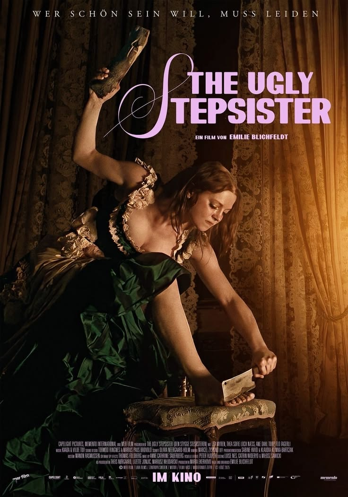
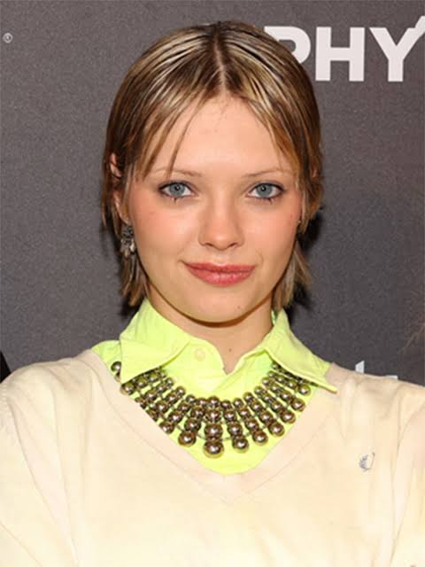
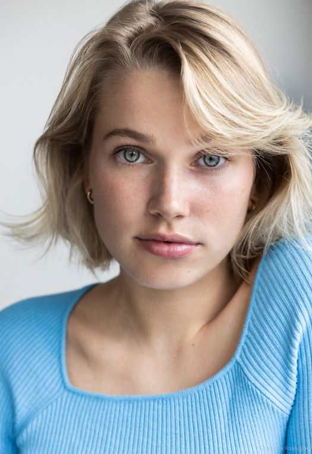
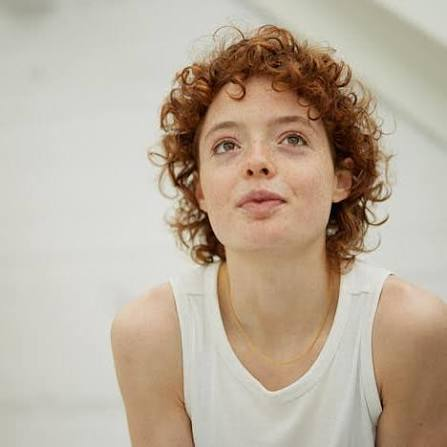
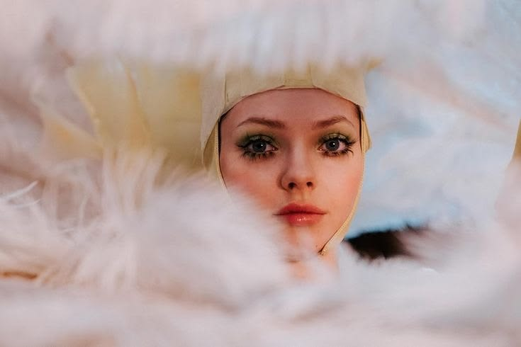
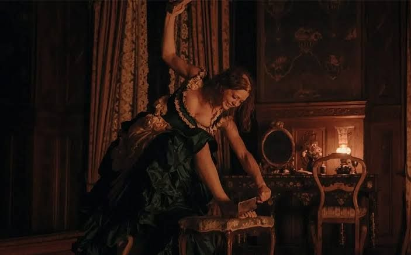
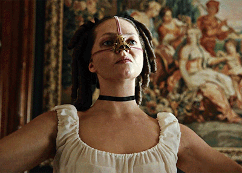
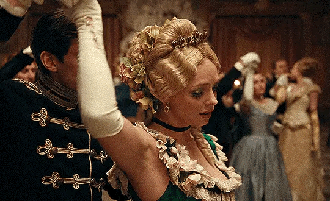
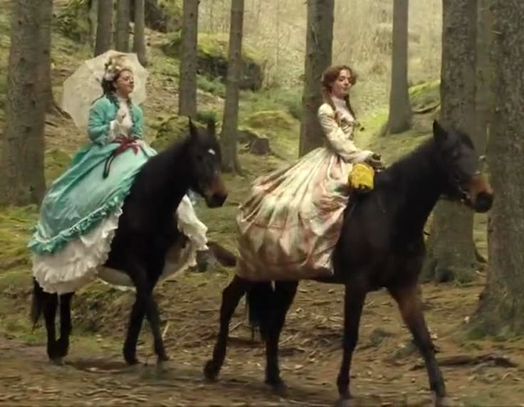
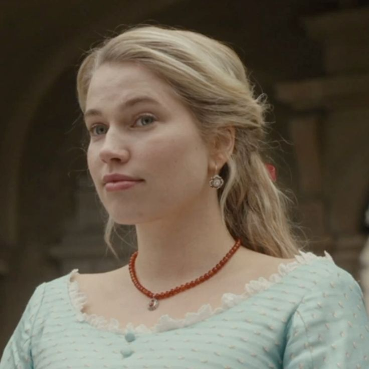

Sinopse

A Meia-Irmã Feia é a releitura sombria da história clássica da Cinderela. Dessa vez, a trama acompanha a meia-irmã da princesa conhecida dos contos de fada. Elvira (Lea Myren) vive com a sua família em um poderoso reino onde poucas coisas são tão importantes quanto a beleza. Quando ela encontra a dose de determinação certa para conquistar o coração do príncipe, medidas extremas serão tomadas em meio a uma competição implacável pela perfeição física. Contra sua linda meia-irmã, Elvira recorre aos mais mirabolantes esquemas para cativar o pretendente e o status dos sonhos. Com muito sangue, mortes e suor, a jovem terá que lutar para ser a mais bela do local e tentar ser, finalmente, escolhida como a Rainha do Baile.
Direção: Emilie Blichfeldt
Trailer
Elenco

Lea Myren
Elvira

Thea Sofie Loch Næss
Agnes
Isac Calmroth
Príncipe Julian

Flo Fagerli
Alma
CONHEÇA OS PERSONAGENS
- Elvira
É a protagonista da história. Considerada “feia” pela sociedade, é insegura e sonha em conquistar o príncipe Julian. Para isso, acaba se submetendo a procedimentos dolorosos para tentar se encaixar no padrão de beleza.
- Agnes
É a meia-irmã de Elvira e é considerada bonita, delicada e perfeita aos olhos das pessoas. Ela chama a atenção do príncipe Julian e acaba se tornando o principal obstáculo para Elvira.
- Julian
Mais do que um interesse romântico, Julian representa o sistema que determina quem é considerada “boa o bastante”. Seu comportamento evidencia como a beleza e o status são tratados como critérios de valor.
- Alma
É a irmã mais nova de Elvira. Ela é mais jovem e acompanha de perto tudo o que acontece com a família, tendo uma relação mais próxima com a irmã.
Galeria






Curiosidades
É o primeiro longa dirigido por Emilie Blichfeldt.
O filme é norueguês e estreou no Festival de Sundance em 2025.
A diretora se inspirou na versão dos Irmãos Grimm de Cinderela.
Foi indicado ao Oscar de Melhor Maquiagem e Penteados.